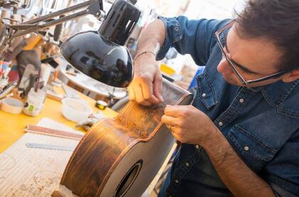

Welcome to Play It! We are a company dedicated to music services, and you will find them in this website. You will have the chance to look for all types of instruments and their tools, learn how to play some of them or how to fix it in case it's broken.
This website is open for everyone who is interested in music and has the desire to learn (or improve) their skills by playing an specific instrument and buying one (or more than one!).
Our music classes work as follows: We always start our first class with the most basics aspects of the instrument. We gather in a big circle and the teacher is positioned in a way where everyone can listen to him. If you would like to learn more about joining classes with us, don't wait to contact us! We will tell you when will the classes start as soon as possible.
If you have an old or broken instrument and you want to repair it, and if you have access to one of our workshops, you can always go and leave it there. If you don't want to go in person you can rather call and ask any questions you have. The person in charge of the workshop will talk to you about how much will it cost and how much time will the instrument take to repair.